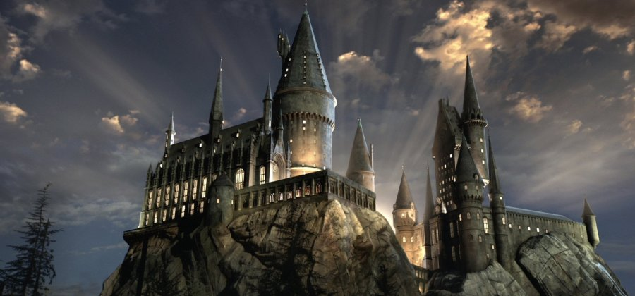
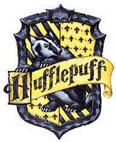
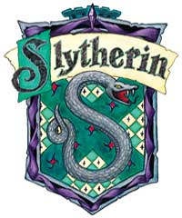

About Hogwarts
Hogwarts is divided into four houses, each bearing the last name of its founder: Godric Gryffindor, Salazar Slytherin, Rowena Ravenclaw and Helga Hufflepuff. Throughout the school year, the houses compete for the House Cup, gaining and losing points based on actions such as performance in class and rule violations. The house with the highest end-of-year total wins and has its colours displayed in the Great Hall for the following school year. Each house also has its own Quidditch team that competes for the Quidditch Cup. These two competitions breed rivalries between the houses. Houses at Hogwarts are living and learning communities for their students. Each house is under the authority of one of the Hogwarts staff members. The Heads of the houses, as they are called, are in charge of giving their students important information, dealing with matters of severe punishment, and responding to emergencies in their houses, among other things. Each year, year level groups of every separate house share the same dormitory and classes. The dormitory and common room of a House are, barring rare exceptions, inaccessible to students belonging to other Houses.
Godric Gryffindor

Gryffindor values courage, bravery, nerve, and chivalry. Gryffindor's mascot is the lion, and its colours are scarlet and gold. The Head of this house is the Transfiguration teacher and Deputy Headmistress, Minerva McGonagall until she becomes headmistress, and the house ghost is Sir Nicholas de Mimsy-Porpington, more commonly known as Nearly Headless Nick. Gryffindor corresponds roughly to the element of fire. The founder of the house is Godric Gryffindor.
The Gryffindor common room is in one of the castle's highest towers, and its entrance is on the seventh floor in the east wing of the castle and is guarded by a painting of The Fat Lady, who is garbed in a pink dress. She permits entry only after being given the correct password, as was distinguished in the third book, when Sirius Black tried forcing entry into the tower, only to be blocked by The Fat Lady after he could not give the correct password. In the first book, Neville Longbottom tends to forget the password and must wait near the painting until other Gryffindors arrive to open the way.
Helga Hufflepuff
Hufflepuff values hard work, patience, justice, and loyalty. The house mascot is the badger, and canary yellow and black are its colours. The Head of this house is the Herbology teacher Pomona Sprout, and the house ghost is The Fat Friar. Hufflepuff corresponds roughly to the element of earth. The founder of this house is Helga Hufflepuff.
The entrance to the Hufflepuff dormitories and common room entrance is concealed in a pile of large barrels in an alcove in the corridor that holds the kitchen. To enter, one must tap the barrel two from the bottom in the middle of the second row in the rhythm of "Helga Hufflepuff". Unlike any other house, the Hufflepuff common room has a repelling device that douses the illegal entrant in vinegar if the wrong lid is tapped or the rhythm is wrong. The Hufflepuff common room is filled with yellow hangings and fat armchairs and it has little underground tunnels leading to the dormitories, all of which have perfectly round doors, like barrel tops.
Rowena Ravenclaw

Ravenclaw values intelligence, creativity, learning, and wit. The house mascot is an eagle and the house colours are blue and bronze (blue and grey in the films). The head of this house is the Charms professor, Filius Flitwick, and the house ghost is The Grey Lady. Ravenclaw corresponds roughly to the element of air. The founder of this house is Rowena Ravenclaw.
The dormitories are in Ravenclaw Tower, on the west side of Hogwarts. The common room, which went undescribed in the series until the climax of Deathly Hallows, is round and filled with blue hangings and armchairs, has a domed ceiling painted with stars and features a replica statue of Rowena wearing her diadem. Harry also notes that Ravenclaws "have a spectacular view of the surrounding mountains". A logical riddle must be solved to gain entry, whereas the Gryffindor and Slytherin common rooms only require a password (Hufflepuffs need to tap a barrel in the rhythm of "Helga Hufflepuff"), indicating that it may be easier for those students from other houses who possess a high degree of intelligence to enter this common room than others. Professor McGonagall, the head of the Gryffindor House, solves the riddle accurately.
Salazar Slytherin
Slytherin house values ambition, cunning, leadership, and resourcefulness; the Sorting Hat said in Harry Potter and the Philosopher's Stone that Slytherins will do anything to get their way. The house mascot of Slytherin is the serpent, and the house colours are green and silver. Salazar Slytherin founded the house. The Head of House is Severus Snape until the seventh book. Then, Horace Slughorn, the previous Head of House, comes out of retirement re-assuming authority after Snape becomes headmaster. The ghost of Slytherin house is The Bloody Baron. Slytherin corresponds roughly to the element of water. The Slytherin dormitories and common room are reached through a bare stone wall in the dungeons. The Slytherin common room is a long, low, dungeon-style room, under the Hogwarts Lake, furnished with green lamps and carved armchairs. The room is described in the second book as having a greenish glow.
The Sorting Hat claims that blood purity is a factor in selecting Slytherins, although this is not mentioned until the fifth book. There is no reason to believe, however, that Muggle-born students are not sorted there, merely that pure-blooded students are more desirable to that house, as there are several examples of half-bloods in the house (such as Snape and Voldemort). In Deathly Hallows, a group of Snatchers claim that "not many Mudbloods" are sorted into Slytherin.